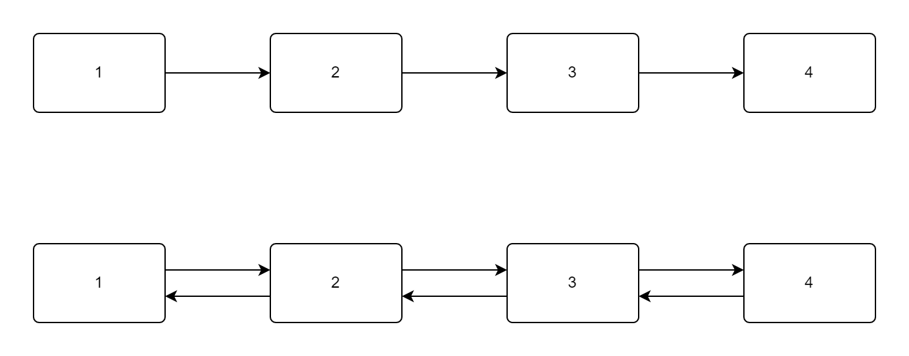

数据结构_04：特殊链表

双向链表
在单链表，也就是上一节提到的普通链表中，当我们需要完成插入或者删除操作时，我们通常需要找到需要操作的链结的上一个链结，为了解决这个问题，双向链表应运而生。双向链表的结构如下图所示：

基于双向链表的不同结构，我们需要对定义结构体，初始化，插入和删除功能进行更新，而其他功能的实现则与单链表相同。
定义结构体
对于双向链表需要指向前一个链结的功能，我们需要在结构体中添加一个结构体指针变量来指向前一个结点，即：
1 | struct listnode |
由于已经有了单链表基础，对于定义结构体此处不再过多赘述。
初始化
双向链表在初始化时只需要将前链也设置为NULL即可，其余的和本教程中单链表一样，在初始化时仅对头链结进行进行初始化，同时对结构体指针重命名以便于后续操作，即：
1 | typedef struct listnode* Node; |
插入
和单链表不同的是，双向链表在插入时需要操作的链更多，这里我们依然用一个流程图来解释全过程：
基于此流程图，我们可以设计出一下代码，即：
1 | int insertlist(Node head, int element, int index) |
再完成这一系列操作后，我们可以将其正向反向分别遍历一遍以测试效果。
删除
删除操作相较于插入较为简单，先看流程图：
据此，我们很容易设计出代码，即：
1 | int deletelist(Node head, int index) |
双向链表的其他操作与单链表大致相同，这里就不做介绍了。
循环链表
相对于普通链表，循环链表多了一个尾结点指向头结点的链，这样的链表从任意结点出发都可以达到任意结点，结构如下图所示：
循环链表的代码较为简单，仅仅需要在普通链表的基础上将尾结点指向头结点即可，这里不做赘述。
总结
双向链表和循环链表本质上还是链表，它们只是链表为了适应不同环境的产物，这也就启发我们在实际运用数据结构时也要根据实际情况进行变化。
返回目录
你可以点击此处返回或查看目录。
- 本文标题：数据结构_04：特殊链表
- 本文作者：云湍/Cloudstill
- 创建时间：2023-02-07 00:56:15
- 本文链接：2023/02/07/数据结构-04：特殊链表/
- 版权声明：本博客所有文章除特别声明外，均采用 BY-NC-SA 许可协议。转载请注明出处！
评论